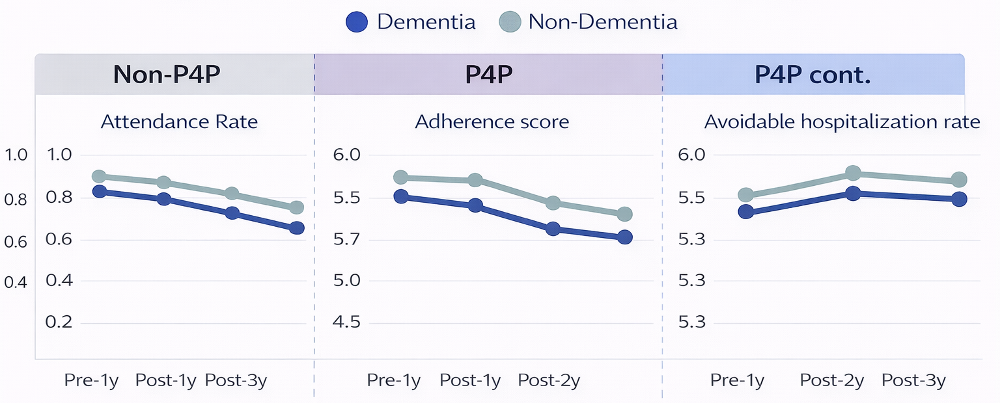

health policy analytics study
Influence of Dementia on Quality of Diabetes Care: The Role of Pay-for-Performance (P4P) Programs
— A national claims-data study evaluating whether continuous P4P enrollment protects diabetes care quality after dementia onset.

Overview / Description
Managing multiple chronic conditions is a growing healthcare challenge. In older adults with diabetes, self-management depends on lifestyle control, glucose monitoring, and medication adherence. Once dementia develops, patients often lose the ability to manage these tasks, and caregivers may prioritize cognitive decline over glycemic control.
This study examined whether newly diagnosed dementia worsens diabetes care quality and whether provider financial incentives through P4P can help sustain quality.
Objective / Success Metrics
Evaluate whether dementia is associated with deterioration in diabetes care quality, and whether continuous participation in the DM-P4P program moderates that impact.
Approach
- Used Taiwan National Health Insurance Database (NHIRD) data from 2010–2020.
- Built an analytical cohort from over 1.1 million elderly patients with diabetes.
- Defined an intervention group (new dementia diagnosis in 2016–2017) and a comparison group.
- Applied 1:4 propensity score matching, producing a matched sample of 43,175 patients.
Outcomes
- Process 1: Attendance to diabetes-related regular visits
- Process 2: Adherence to guideline-concordant services (HbA1c, blood lipids, eye exams)
- Outcome: Diabetes-related avoidable hospitalization rate
Models
- Logit link with binomial distribution for visit attendance and hospitalizations
- Poisson distribution for guideline-concordant services

Results / Key Findings
- Negative impact of dementia: Newly diagnosed dementia was associated with a significant decline in regular diabetes visits (p < .001) and guideline-concordant care (p < .001).
- Protective effect of continuous P4P enrollment: Only the continuously enrolled group showed no significant dementia-related differences.
Impact / Conclusion / Recommendations
- Cognitive decline can signal early deterioration in chronic disease management quality.
- The DM-P4P program can protect vulnerable patients, but continuity of enrollment is critical.
- Policy design should encourage providers to retain multimorbid patients in P4P programs rather than allowing dropout due to care complexity.